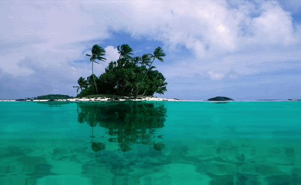
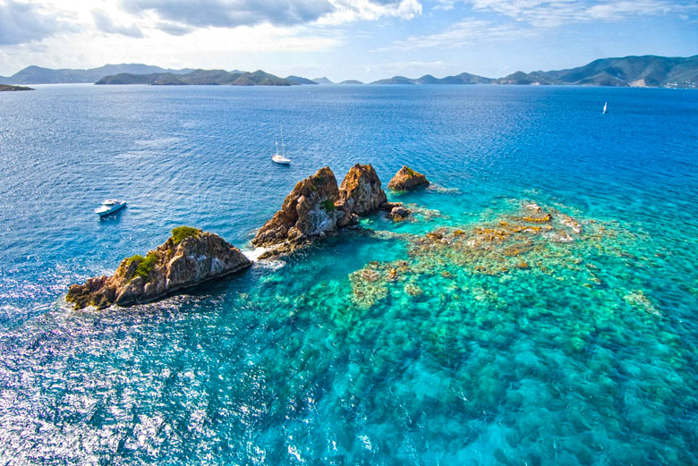
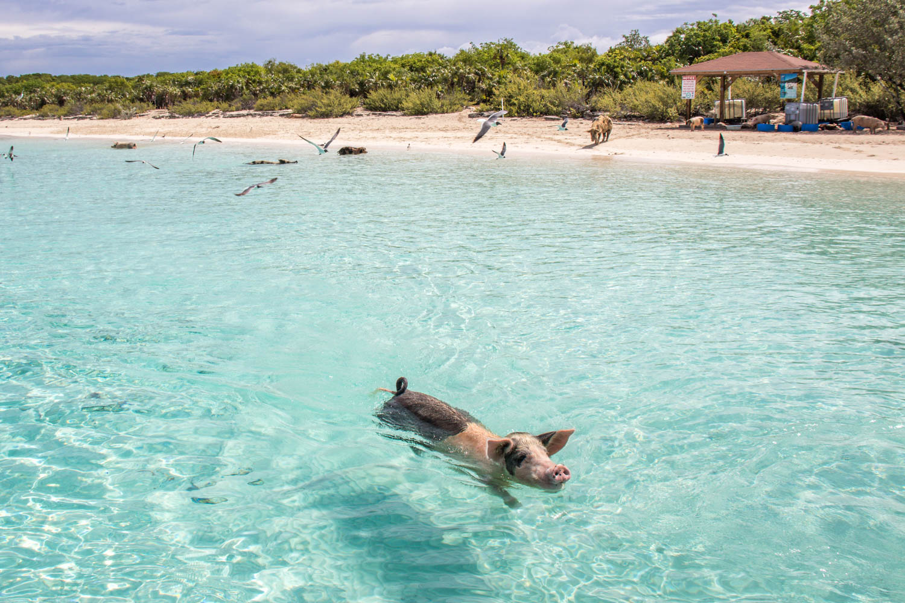

Ponto 2 - Caribe

Chegando ao local, iriamos a Bahamas, um arquipélago do Caribe, e ficariamos em algum outro hotel chique, coisa recorrente que iriamos fazer durante toda a viajem.
A partir desse momento, iriamos ir de dia em dia pulando de arquipélago em arquipélago, sempre ficando em algum hotel diferente, todos os dias aproveitando as diferentes praias pelo Caribe.

E eu gostaria de visitar uma praia em especifíco, a Big Major Cay (Pig Beach, ou seja, “praia dos porcos”) é a praia da ilha Exumas, localizada nas Bahamas, onde acontece o famoso passeio entre os porquinhos caribenhos.

Após essa aventura, partiriamos para Itália!